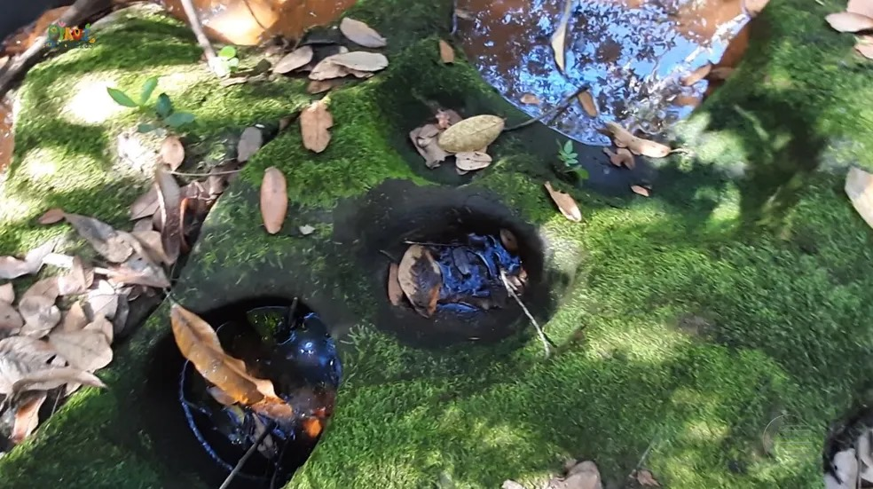
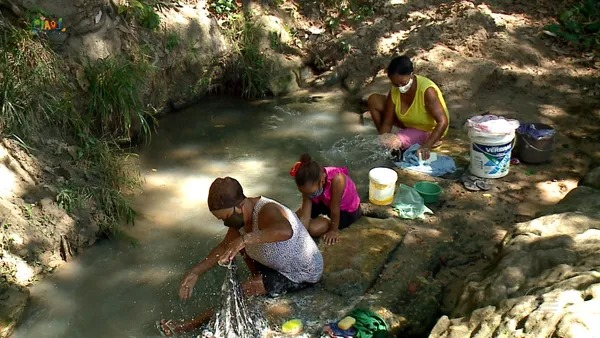

Angical do Piauí é uma cidade que tem uma história rica e interessante. Ela foi fundada em 1954, mas antes disso já era habitada por índios da tribo dos Pilões, que usavam as rochas da região para fazer alimentos, cosméticos e medicamentos naturais. Esses índios foram substituídos por três famílias que vieram de outros estados: os Gomes, do Ceará, os Santos, do próprio Piauí, e os Soares, do Maranhão.
Essa imagem mostra uma rocha que era usada como panela pelos índios da tribo dos Pilões, que habitavam a região de Angical do Piauí antes da chegada dos colonizadores.
Angical: Emancipação e Gestão Atual
Com o apoio do deputado estadual João Ribeiro de Carvalho, Angical do Piauí conseguiu se emancipar politicamente e se tornar um município em 24 de julho de 1954. O primeiro prefeito eleito foi Luís Pereira dos Santos, que assumiu o cargo em 24 de dezembro de 1955. Desde então, a cidade já realizou dezessete eleições municipais regulares e atualmente é governada pelo prefeito Bruno Ferreira Sobrinho Neto
Angical: Entre Águas e Tradições
A cidade tem cerca de 6.700 habitantes e sua principal atividade econômica é a agricultura. Ela se destaca pela sua localização geográfica privilegiada, no centro do Médio Parnaíba, e pela sua abundância de água subterrânea. Na comunidade Poços, existem mais de 40 nascentes que desaguam no rio Parnaíba, o maior rio do Nordeste. Essas águas são usadas pelas lavadeiras da região, que mantêm viva a tradição de lavar roupas e conversar no riacho
Angical do Piauí: Geografia e Dados Demográfico
Angical do Piauí é uma cidade e um município do estado do Piauí, Brasil. Ela está localizada na Microrregião do Médio Parnaíba Piauiense, mesorregião do Centro-Norte Piauiense. Sua latitude é de -6,08786 graus e sua longitude é de -42,74 graus. Sua distância até a capital, Teresina, é de 122 km. Ela tem uma área total de 223,435 km² e uma população estimada de 6.688 habitantes (estimativa 2016)